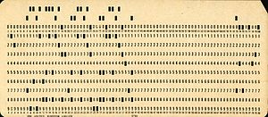
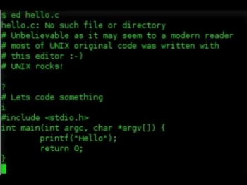
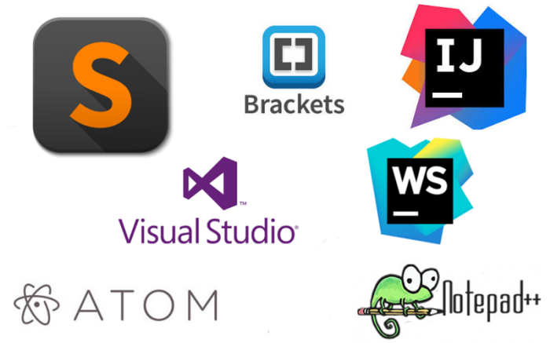

Evolution of code editors
Evolution of code editors
Modern day text editors are a blessing to the new programmers and learners . This was not the case A few decades ago , In this article I will try to tell you a small history of the modern day code editors that i learned and how they evolved over the time .
Lets first understand how computers were programmed before the code editors we know now existed . Early on, most programs were typed onto punched cards - a machine had a keyboard and took blank pieces of thin cardboard with punched holes in it . It was miserable and Tedious . you can find more information about how punch cards used to work and about that time here.

punch card
The information about the oldest text editor I could find was the qued(quick editor) text editor . This editor gave rise to the new text editor ed . ed was written by ken thompson for the very famous unix operating sytem . ed inspired many text editors one of which is vi . vi was written by Bill Joy in the year 1976

Ed text editor running on a system
In the same year another text editor was released by the richard stallman for the GNU project called Emacs .
Fun fact I write & maintain this blog on emacs using org mode
Intially Emacs was written in lisp and C but in the coming years another language called the elisp or emacs lisp was developed to configure emacs .Emacs went on to be one the most successful editors of that time . If you have watched the movie the social network , mark zuckerberg uses the same editor to write facebook . along with facebook many other software like linux were written in emacs . You can read more about why emacs in such a great editor here .
Logos of emacs and vim respectively
20 years into the future 1991 , the iconic text editor vim is born Vim stands for vi Improved .Vim improvements inculde extensive plugin management and support for 100s of programming language . VIm was originally started by bram moolenar but now with the use of vim's github repo many people contribute to make vim better . According to the 2021 stack overflow developer survey around 24.19% of programmers voted that they still use vim and i am glad to be a part of them .
its 1997 . Microsoft releases its own ide/text editor Visual studio . After 2000s the ERA of IDE's started Some of the famous IDE's that are extensively used till day were released . Some of them are Inteljji idea & eclipse which were released in 2001 along with other ide's like netbeans in 2000 and xcode for mac in 2003 . Not only IDEs but some very famous text editors like notepad++ in 2003 and sublime text in 2008 were released . I know while reading this post you were looking for that one text editor , suprisingly vs code is very late in the editors game but it did came with lsp and other useful features . vscode was released in 2015 making it of the youngest text editor still its the most used text editor today .

some of the modern text editors and IDEs
This was a little little history about the code editors that we use in our daily life .